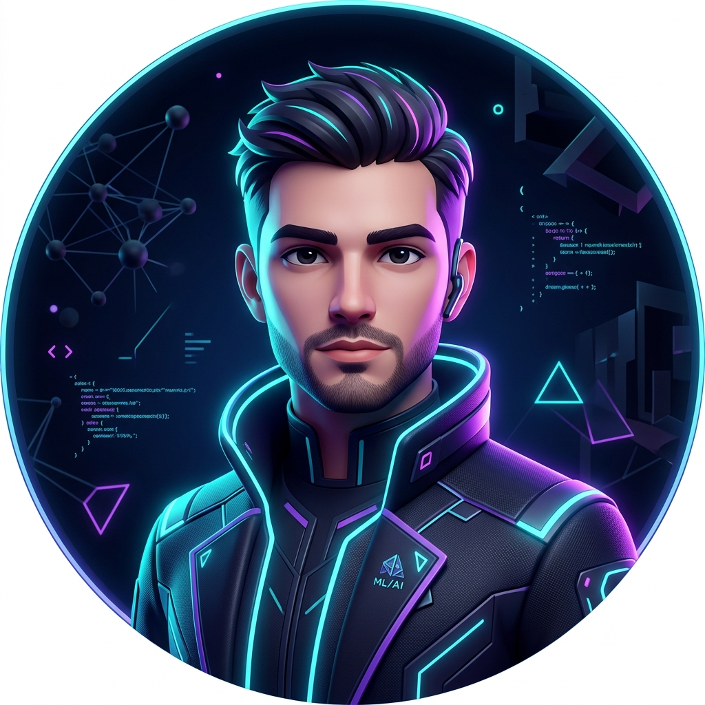

Hello, World! I am
Bridging the gap between raw data and production-ready intelligent systems. Specializing in end-to-end Machine Learning, Data Engineering, and MLOps.
I am a highly motivated Machine Learning Engineer currently studying at the University of Vavuniya. I am passionate about building end-to-end machine learning systems that solve real-world problems.
My expertise lies not just in training models, but in the entire lifecycle: from robust data pipelines to deploying scalable models in the cloud.

ML Engineer
Real-world problems, solved and deployed.
Present
Pursuing a degree focused on computing and data. Building a strong foundation in algorithms, databases, and machine learning fundamentals.
Ongoing
Designing and deploying computer vision and data engineering projects. Focusing on MLOps best practices and cloud deployments.
I am currently looking for internship opportunities. Let's build something amazing together.
yohan.shanuka@example.com
Sri Lanka